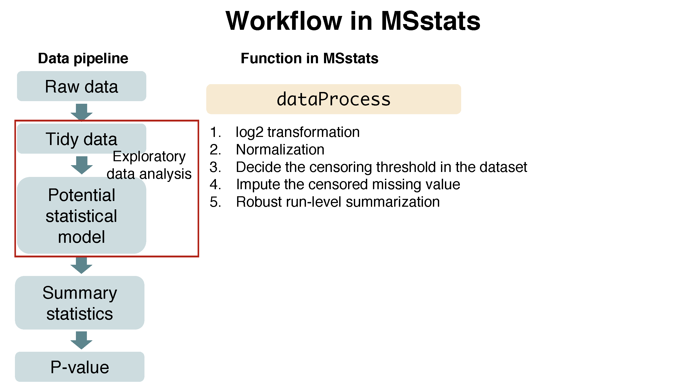
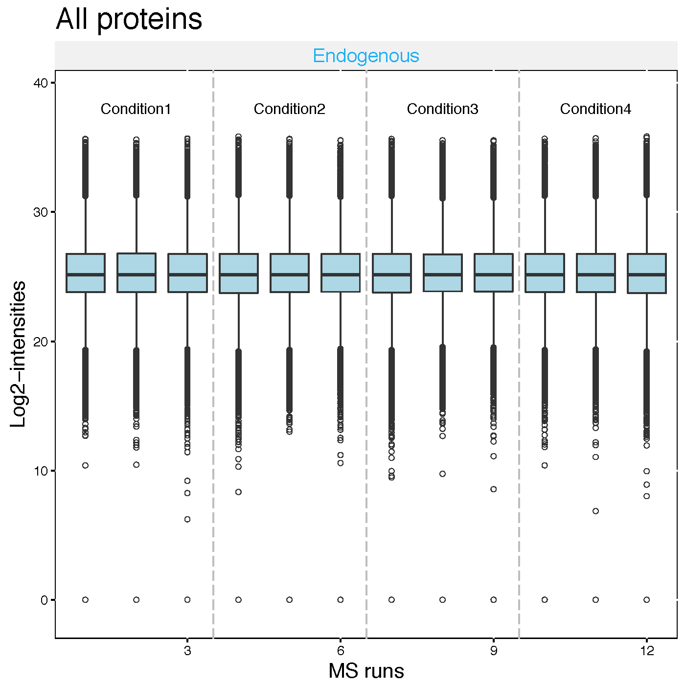
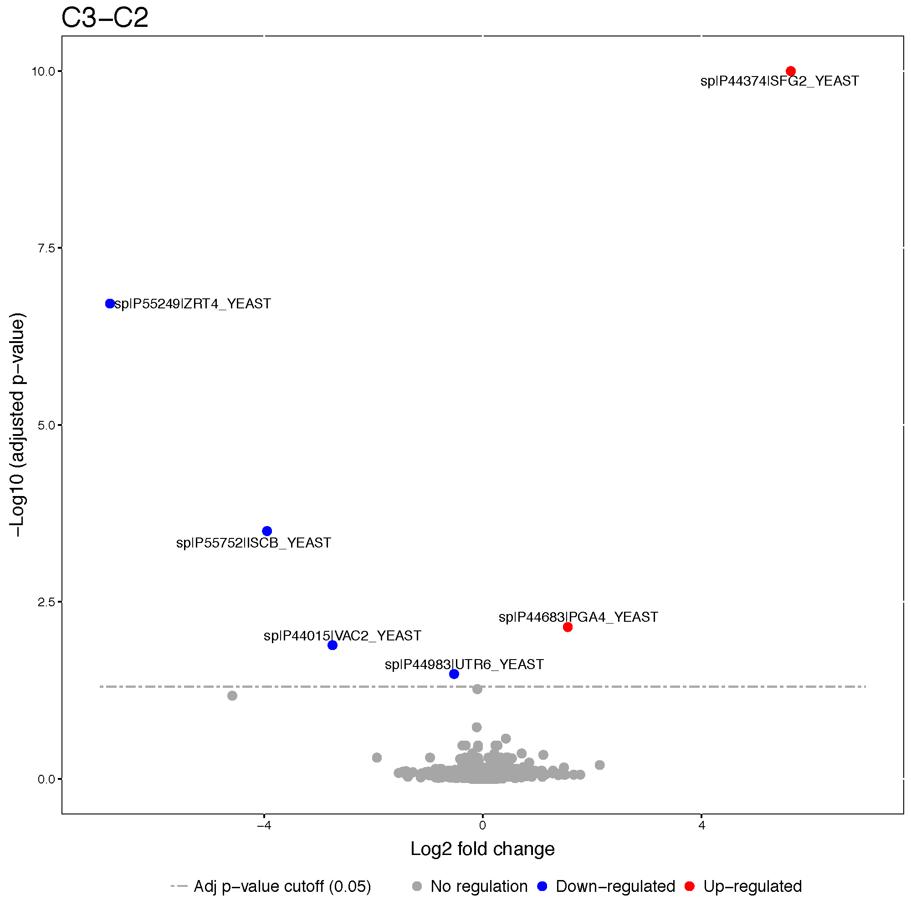

Chapter 2 Section 8 : MSstats
2.1 introduction to data and preprocessing
2.1.1 Objective
- Preprocessing steps to make required input format for MSstats from output from diverse output of spectral processing tools.
- Make annotation file, based on experimental design.
2.1.2 Workflow in MSstats


2.1.3 Data
- the quantified peak intensities data from ABRF 2015, processed by Skyline.

Summary of the ABRF 2015 study design, Choi, et al. J Proteome Res. 2017
2.1.4 Load MSstats
Load MSstats first. Then you are ready to start MSstats.
library(MSstats)
?MSstats2.1.5 Allowable data formats
MSstats performs statistical analysis steps, that follow peak identification and quantitation. Therefore, input
to MSstats is the output of other software tools (such as Skyline, MaxQuant and so on) that read raw spectral files
, identify and quantify spectral peaks. The preferred structure of data for use in MSstats is a .csv file
in a long format with at least 10 columns representing the following variables: ProteinName, PeptideSequence, PrecursorCharge, FragmentIon, ProductCharge, IsotopeLabelType, Condition, BioReplicate, Run, Intensity. The variable names are fixed, but are case-insensitive.
## ProteinName PeptideSequence PrecursorCharge FragmentIon ProductCharge
## 1 bovine S.PVDIDTK_5 5 NA NA
## 2 bovine S.PVDIDTK_5 5 NA NA
## 3 bovine S.PVDIDTK_5 5 NA NA
## 4 bovine S.PVDIDTK_5 5 NA NA
## 5 bovine S.PVDIDTK_5 5 NA NA
## 6 bovine S.PVDIDTK_5 5 NA NA
## IsotopeLabelType Condition BioReplicate Run Intensity
## 1 L C1 1 1 2636792
## 2 L C1 1 2 1992418
## 3 L C1 1 3 1982146
## 4 L C2 1 4 5019594
## 5 L C2 1 5 4560468
## 6 L C2 1 6 36278492.1.6 Convert to MSstats required format (Data cleaning)
Let’s start preprocessing steps to make required input format for MSstats from output from diverse output of spectral processing tools.

Data input support for various data acquisition methods : DDA, DIA, SRM
Interoperability with existing computational tools : - Converter functions for 7 data processin tools :
SkylinetoMSstatsFormat,MaxQtoMSstatsFormat,OpenMStoMSstatsFormat,ProgenesistoMSstatsFormat,PDtoMSstatsFormat,SpectronauttoMSstatsFormat,OpenSWATHtoMSstatsFormat,DIAUmpiretoMSstatsFormat- Consistent data cleaning steps across converter functions : filter multiple measurements, shared peptides, etc. - Generate the same format of data from diverse type of data format.
2.1.6.1 Skyline output
2.1.6.1.1 Read data
The required input data is generated automatically when using MSstats report format in Skyline.
We first load and access the dataset processed by Skyline. The name of saved file from Skyline using MSstats report format is ‘ABRF2015_Skyline_report.csv’. or you can use the published data from this link (https://panoramaweb.org/labkey/project/MacCoss/brendan/manuscripts/iPRG%202015/begin.view). This example dataset is the exactly same data in ‘iPRG_10ppm_2rt_15cut_nosingle.csv’ from the link above.
# Read output from skyline
raw.skyline <- read.csv(file="data/data_Skyline/ABRF2015_Skyline_report.csv")# Check the first 6 rows of dataset
head(raw.skyline)## ProteinName PeptideSequence PeptideModifiedSequence
## 1 DECOY_sp|P0CF18|YM085_YEAST KDMYGNPFQK KDM[+16]YGNPFQK
## 2 DECOY_sp|P0CF18|YM085_YEAST KDMYGNPFQK KDM[+16]YGNPFQK
## 3 DECOY_sp|P0CF18|YM085_YEAST KDMYGNPFQK KDM[+16]YGNPFQK
## 4 DECOY_sp|P0CF18|YM085_YEAST KDMYGNPFQK KDM[+16]YGNPFQK
## 5 DECOY_sp|P0CF18|YM085_YEAST KDMYGNPFQK KDM[+16]YGNPFQK
## 6 DECOY_sp|P0CF18|YM085_YEAST KDMYGNPFQK KDM[+16]YGNPFQK
## PrecursorCharge PrecursorMz FragmentIon ProductCharge ProductMz
## 1 3 415.1974 precursor 3 415.1974
## 2 3 415.1974 precursor 3 415.1974
## 3 3 415.1974 precursor 3 415.1974
## 4 3 415.1974 precursor 3 415.1974
## 5 3 415.1974 precursor 3 415.1974
## 6 3 415.1974 precursor 3 415.1974
## IsotopeLabelType Condition BioReplicate FileName
## 1 light NA NA JD_06232014_sample1_B.raw
## 2 light NA NA JD_06232014_sample1_C.raw
## 3 light NA NA JD_06232014_sample1-A.raw
## 4 light NA NA JD_06232014_sample2_A.raw
## 5 light NA NA JD_06232014_sample2_B.raw
## 6 light NA NA JD_06232014_sample2_C.raw
## Area StandardType Truncated annotation_QValue
## 1 147327 NA False NA
## 2 1373397 NA False NA
## 3 71765 NA False NA
## 4 66387 NA False NA
## 5 107736 NA False NA
## 6 380812 NA False NAThere are some column named differently than required input. The information for Condition and BioReplicate is missing. Let’s do preliminary check for this input.
# total number of unique protein name
length(unique(raw.skyline$Protein))## [1] 3097# several isotopic peaks for peptide charge
unique(raw.skyline$FragmentIon)## [1] precursor precursor [M+1] precursor [M+2]
## Levels: precursor precursor [M+1] precursor [M+2]# unique FileName, which is MS run.
unique(raw.skyline$FileName)## [1] JD_06232014_sample1_B.raw JD_06232014_sample1_C.raw
## [3] JD_06232014_sample1-A.raw JD_06232014_sample2_A.raw
## [5] JD_06232014_sample2_B.raw JD_06232014_sample2_C.raw
## [7] JD_06232014_sample3_A.raw JD_06232014_sample3_B.raw
## [9] JD_06232014_sample3_C.raw JD_06232014_sample4_B.raw
## [11] JD_06232014_sample4_C.raw JD_06232014_sample4-A.raw
## 12 Levels: JD_06232014_sample1_B.raw ... JD_06232014_sample4-A.raw# 'Truncated' column
unique(raw.skyline$Truncated)## [1] False True
## Levels: False True# count table for 'Truncated' column
xtabs(~Truncated, raw.skyline)## Truncated
## False True
## 237 1256666 829# count which 'Truncated' is 'True'
sum(raw.skyline$Truncated == 'True')## [1] 8292.1.6.1.2 Set annotation file
Annotation information is required to fill in Condition and BioReplicate for corresponding Run information. Users have to prepare as csv or txt file like ‘ABRF2015_Skyline_annotation.csv’, which includes Run, Condition, and BioReplicate information, and load it in R.
annot.skyline <- read.csv(file="data/data_Skyline/ABRF2015_Skyline_annotation.csv")
annot.skyline## Run Condition BioReplicate
## 1 JD_06232014_sample1-A.raw Condition1 1
## 2 JD_06232014_sample2_A.raw Condition2 2
## 3 JD_06232014_sample4_B.raw Condition4 4
## 4 JD_06232014_sample1_B.raw Condition1 1
## 5 JD_06232014_sample1_C.raw Condition1 1
## 6 JD_06232014_sample2_B.raw Condition2 2
## 7 JD_06232014_sample2_C.raw Condition2 2
## 8 JD_06232014_sample3_A.raw Condition3 3
## 9 JD_06232014_sample3_B.raw Condition3 3
## 10 JD_06232014_sample3_C.raw Condition3 3
## 11 JD_06232014_sample4-A.raw Condition4 4
## 12 JD_06232014_sample4_C.raw Condition4 42.1.6.1.2.1 Common mistake for annotation file : Incorrect Run information
Raw file name in the output of spectral processing tool is commonly long. We can make a typo in annotation file. If Raw file name and Run information are not matched,
Let’s check whether Run information is same as File.Name in output of Skyline.
setdiff(unique(raw.skyline$FileName), annot.skyline$Run)## character(0)setdiff(annot.skyline$Run, unique(raw.skyline$FileName))## character(0)There is no issue in this annotation.
Let’s try the example with unmatched information.
annot.wrong <- read.csv(file="data/data_Skyline/ABRF2015_Skyline_annotation_wrong_example.csv")
annot.wrong## Run Condition BioReplicate
## 1 JD_06232014_sample1_A.raw Condition1 1
## 2 JD_06232014_sample2_A.raw Condition2 2
## 3 JD_06232014_sample4_B.raw Condition4 4
## 4 JD_06232014_sample1_B.raw Condition1 1
## 5 JD_06232014_sample1_C.raw Condition1 1
## 6 JD_06232014_sample2_B.raw Condition2 2
## 7 JD_06232014_sample2_C.raw Condition2 2
## 8 JD_06232014_sample3_A.raw Condition3 3
## 9 JD_06232014_sample3_B.raw Condition3 3
## 10 JD_06232014_sample3_C.raw Condition3 3
## 11 JD_06232014_sample4-A.raw Condition4 4
## 12 JD_06232014_sample4_C.raw Condition4 4Note! small details : hyphen vs underline.
2.1.6.1.2.2 Common mistake for annotation file : Incorrect BioReplicate information
MSstats distinguish the design of experiment as group comparison, time course, paired design, with the combination of Condition, BioReplicate, and Run.
2.1.6.1.2.3 Group comparison

In a group comparison design, the conditions (e.g., disease states) are profiled across non-overlapping sets of biological replicates (i.e., subjects). In this example there are 2 conditions, Disease and Control (in general the number of conditions can vary). There are 3 subjects (i.e., biological replicates) per condition (in general an equal number of replicates per condition is not required). Overall, in this example there are 2 × 3 = 6 mass spectrometry runs.
The most important is that 1) subject IDs for disease group are completely different thatn subject IDs for control group 2) Run is not order of spectral acquisition, but just unique MS run ID.

In addition, if each subject has e technical replicate runs (in general technical replicates are not required, and their number per sample may vary). there are 2 × 3 × 3 = 18 mass spectrometry runs.
2.1.6.1.2.4 Time course
The important feature of a time course experimental design is that a same subject (i.e., biological replicate) is repetitively measured across multiple time points. In this example there are 3 time points, Time1, Time2, and Time3 (in general the number of times can vary). There are 3 subjects (i.e., biological replicates) measured across times (in general an equal number of times per replicate is not required). There are no technical replicates (in general the number of technical replicates per sample may vary). Overall, in this example there are 3 × 3 = 9 mass spectrometry runs.

2.1.6.1.2.5 Paired design
Another frequently used experimental design is a paired design, where measurements from multiple conditions (such as healthy biopsy and disease biopsy) are taken from a same subject. The statistical model for this experimental design is the same as in the time course experiment, however the values in the columns of the input data may have a different appearence. In this example there are 3 subjects (in general the number of patients can vary). There are three conditions per subject (in general the number of conditions per subject can exceed two). Overall, in this example there are \(2 \times 3 = 6\) mass spectrometry runs. BioReplicate should indicate each individual ID.

2.1.6.1.3 Preprocessing with SkylinetoMSstatsFormat
The input data for MSstats is required to contain variables of ProteinName, PeptideSequence, PrecursorCharge, FragmentIon, ProductCharge, IsotopeLabelType, Condition, BioReplicate, Run, Intensity. These variable names should be fixed. MSstats input from Skyline adapts the column scheme of the dataset so that it fits MSstats input format. However there are several extra column names and also some of them need to be changed. SkylinetoMSstatsFormat function helps pre-processing for making right format of MSstats input from Skyline output. For example, it renames some column name, and replace truncated peak intensities with NA. Another important step is to handle isotopic peaks before using dataProcess. The output from Skyline for DDA experiment has several measurements of peak area from the monoisotopic, M+1 and M+2 peaks. To get a robust measure of peptide intensity, we can sum over isotopic peaks per peptide or use the highest peak. Here we take a summation per peptide ion.
Here is the summary of pre-processing steps in SkylinetoMSstatsFormat function (in orange box below).

For further details, visit the help file using the following code.
?SkylinetoMSstatsFormat# reformating and pre-processing for Skyline output.
input.skyline <- SkylinetoMSstatsFormat(raw.skyline,
annotation=annot.skyline,
removeProtein_with1Feature = TRUE)## ** Proteins, which names include DECOY, are removed.## ** Peptides, that are used in more than one proteins, are removed.## Warning in SkylinetoMSstatsFormat(raw.skyline, annotation =
## annot.skyline, : NAs introduced by coercion## ** Truncated peaks are replaced with NA.## ** For DDA datasets, three isotopic peaks per feature and run are summed.## ** 4 features have all NAs or zero intensity values and are removed.## ** 13 features have 1 or 2 intensities across runs and are removed.## ** All proteins have at least two features.head(input.skyline)## ProteinName PeptideSequence PrecursorCharge
## 1 sp|D6VTK4|STE2_YEAST EGEVEPVDM[+16]YTPDTAADEEARK 3
## 2 sp|D6VTK4|STE2_YEAST EGEVEPVDM[+16]YTPDTAADEEARK 3
## 3 sp|D6VTK4|STE2_YEAST EGEVEPVDM[+16]YTPDTAADEEARK 3
## 4 sp|D6VTK4|STE2_YEAST EGEVEPVDM[+16]YTPDTAADEEARK 3
## 5 sp|D6VTK4|STE2_YEAST EGEVEPVDM[+16]YTPDTAADEEARK 3
## 6 sp|D6VTK4|STE2_YEAST EGEVEPVDM[+16]YTPDTAADEEARK 3
## FragmentIon ProductCharge IsotopeLabelType Condition BioReplicate
## 1 sum NA L Condition1 1
## 2 sum NA L Condition2 2
## 3 sum NA L Condition4 4
## 4 sum NA L Condition2 2
## 5 sum NA L Condition4 4
## 6 sum NA L Condition3 3
## Run Intensity StandardType
## 1 JD_06232014_sample1_C.raw 7863713 NA
## 2 JD_06232014_sample2_A.raw 977615 NA
## 3 JD_06232014_sample4_B.raw 4102785 NA
## 4 JD_06232014_sample2_C.raw 6547299 NA
## 5 JD_06232014_sample4_C.raw 3972464 NA
## 6 JD_06232014_sample3_B.raw 8896052 NA2.1.6.1.4 Preliminary check
length(unique(input.skyline$ProteinName)) ## [1] 3027sum(is.na(input.skyline$Intensity)) ## [1] 219sum(!is.na(input.skyline$Intensity) & input.skyline$Intensity==0)## [1] 24142.1.6.2 MaxQuant output
2.1.6.2.1 Read data
Three files should be prepared before MSstats. Two files, ‘proteinGroups.txt’ and ‘evidence.txt’ are outputs from MaxQuant.
# First, get protein ID information
proteinGroups <- read.table("data/data_MaxQuant/proteinGroups.txt", sep = "\t", header = TRUE)# Read in MaxQuant file: evidence.txt
evi <- read.table("data/data_MaxQuant/evidence.txt", sep="\t", header=TRUE)
colnames(evi)## [1] "Sequence"
## [2] "Length"
## [3] "Modifications"
## [4] "Modified.sequence"
## [5] "Oxidation..M..Probabilities"
## [6] "Oxidation..M..Score.Diffs"
## [7] "Acetyl..Protein.N.term."
## [8] "Oxidation..M."
## [9] "Missed.cleavages"
## [10] "Proteins"
## [11] "Leading.proteins"
## [12] "Leading.razor.protein"
## [13] "Gene.names"
## [14] "Protein.names"
## [15] "Type"
## [16] "Raw.file"
## [17] "MS.MS.m.z"
## [18] "Charge"
## [19] "m.z"
## [20] "Mass"
## [21] "Resolution"
## [22] "Uncalibrated...Calibrated.m.z..ppm."
## [23] "Uncalibrated...Calibrated.m.z..Da."
## [24] "Mass.Error..ppm."
## [25] "Mass.Error..Da."
## [26] "Uncalibrated.Mass.Error..ppm."
## [27] "Uncalibrated.Mass.Error..Da."
## [28] "Max.intensity.m.z.0"
## [29] "Retention.time"
## [30] "Retention.length"
## [31] "Calibrated.retention.time"
## [32] "Calibrated.retention.time.start"
## [33] "Calibrated.retention.time.finish"
## [34] "Retention.time.calibration"
## [35] "Match.time.difference"
## [36] "Match.m.z.difference"
## [37] "Match.q.value"
## [38] "Match.score"
## [39] "Number.of.data.points"
## [40] "Number.of.scans"
## [41] "Number.of.isotopic.peaks"
## [42] "PIF"
## [43] "Fraction.of.total.spectrum"
## [44] "Base.peak.fraction"
## [45] "PEP"
## [46] "MS.MS.Count"
## [47] "MS.MS.Scan.Number"
## [48] "Score"
## [49] "Delta.score"
## [50] "Combinatorics"
## [51] "Intensity"
## [52] "Reverse"
## [53] "Potential.contaminant"
## [54] "id"
## [55] "Protein.group.IDs"
## [56] "Peptide.ID"
## [57] "Mod..peptide.ID"
## [58] "MS.MS.IDs"
## [59] "Best.MS.MS"
## [60] "AIF.MS.MS.IDs"
## [61] "Oxidation..M..site.IDs"unique(evi$Raw.file)## [1] JD_06232014_sample1-A JD_06232014_sample2_A JD_06232014_sample4_B
## [4] JD_06232014_sample1_B JD_06232014_sample1_C JD_06232014_sample2_B
## [7] JD_06232014_sample2_C JD_06232014_sample3_A JD_06232014_sample3_B
## [10] JD_06232014_sample3_C JD_06232014_sample4-A JD_06232014_sample4_C
## 12 Levels: JD_06232014_sample1_B ... JD_06232014_sample4-AOne file is for annotation information, required to fill in Condition and BioReplicate for corresponding Run information. Users have to prepare as csv or txt file like ‘ABRF2015_MaxQuant_annotation.csv’, which includes Run, Condition, and BioReplicate information, and load it in R.
2.1.6.2.2 Set annotation file
Annotation information is required to fill in Condition and BioReplicate for corresponding Raw.file information. Users have to prepare as csv or txt file like ‘ABRF2015_MaxQuant_annotation.csv’, which includes Raw.file, Condition, and BioReplicate information, and load it in R. Raw.file column in the annotation file should be the same as unique Raw.file in evidence.txt file.
# Read in annotation including condition and biological replicates: annotation.csv
annot.maxquant <- read.csv("data/data_MaxQuant/ABRF2015_MaxQuant_annotation.csv", header = TRUE)
annot.maxquant## Raw.file Condition BioReplicate IsotopeLabelType
## 1 JD_06232014_sample1-A Condition1 1 L
## 2 JD_06232014_sample2_A Condition2 2 L
## 3 JD_06232014_sample4_B Condition4 4 L
## 4 JD_06232014_sample1_B Condition1 1 L
## 5 JD_06232014_sample1_C Condition1 1 L
## 6 JD_06232014_sample2_B Condition2 2 L
## 7 JD_06232014_sample2_C Condition2 2 L
## 8 JD_06232014_sample3_A Condition3 3 L
## 9 JD_06232014_sample3_B Condition3 3 L
## 10 JD_06232014_sample3_C Condition3 3 L
## 11 JD_06232014_sample4-A Condition4 4 L
## 12 JD_06232014_sample4_C Condition4 4 L2.1.6.2.3 Preprocessing with MaxQtoMSstatsFormat
MaxQtoMSstatsFormat function helps pre-processing for making right format of MSstats input from MaxQuant output. Basically, this function gets peptide ion intensity from ‘evidence.txt’ file. In addition, there are several steps to filter out or to modify the data in order to get required information.
Here is the summary of pre-processing steps in MaxQtoMSstatsFormat function (in orange box below).

?MaxQtoMSstatsFormat# reformating and pre-processing for MaxQuant output.
# no protein with 1 peptide
input.maxquant <- MaxQtoMSstatsFormat(evidence=evi,
annotation=annot.maxquant,
proteinGroups=proteinGroups,
removeProtein_with1Peptide=TRUE)## ** + Contaminant, + Reverse, + Only.identified.by.site, proteins are removed.## ** Peptide and charge, that have 1 or 2 measurements across runs, are removed.## ** 282 proteins, which have only peptide and charge in a protein, are removed among 3157 proteins.head(input.maxquant)## ProteinName PeptideSequence PrecursorCharge FragmentIon
## 1 D6VTK4 EGEVEPVDMYTPDTAADEEARK 3 NA
## 2 D6VTK4 FYPGTLSSFQTDSINNDAK 2 NA
## 3 D6VTK4 IGPFADASYK 2 NA
## 4 D6VTK4 NQFYQLPTPTSSK 2 NA
## 5 D6VTK4 TFVSETADDIEK 2 NA
## 6 D6VTK4 TNTITSDFTTSTDR 2 NA
## ProductCharge IsotopeLabelType Condition BioReplicate
## 1 NA L Condition1 1
## 2 NA L Condition1 1
## 3 NA L Condition1 1
## 4 NA L Condition1 1
## 5 NA L Condition1 1
## 6 NA L Condition1 1
## Run Intensity
## 1 JD_06232014_sample1_B 87141000
## 2 JD_06232014_sample1_B 46167000
## 3 JD_06232014_sample1_B 45425000
## 4 JD_06232014_sample1_B 47094000
## 5 JD_06232014_sample1_B NA
## 6 JD_06232014_sample1_B 627860002.1.6.2.4 Preliminary check
length(unique(input.maxquant$ProteinName)) ## [1] 2875sum(is.na(input.maxquant$Intensity)) ## [1] 40056sum(!is.na(input.maxquant$Intensity) & input.maxquant$Intensity==0)## [1] 0Challenge
- Let’s check unique information for
Run,BioReplicateandConditionininput.maxquant.
unique(input.maxquant[, c('Run', 'BioReplicate', 'Condition')])## Run BioReplicate Condition
## 1 JD_06232014_sample1_B 1 Condition1
## 30600 JD_06232014_sample1_C 1 Condition1
## 61199 JD_06232014_sample1-A 1 Condition1
## 91798 JD_06232014_sample2_A 2 Condition2
## 122397 JD_06232014_sample2_B 2 Condition2
## 152996 JD_06232014_sample2_C 2 Condition2
## 183595 JD_06232014_sample3_A 3 Condition3
## 214194 JD_06232014_sample3_B 3 Condition3
## 244793 JD_06232014_sample3_C 3 Condition3
## 275392 JD_06232014_sample4_B 4 Condition4
## 305991 JD_06232014_sample4_C 4 Condition4
## 336590 JD_06232014_sample4-A 4 Condition42.1.6.3 OpenMS output
2.1.6.3.1 Read data
# First, read output of OpenMS
raw.openMS <- read.csv("data/data_OpenMS/ABRF2015_OpenMS_raw.csv", stringsAsFactors=F) # the data file
head(raw.openMS)## ProteinName PeptideSequence PrecursorCharge FragmentIon
## 1 sp|P09938|RIR2_YEAST AAADALSDLEIK 2 NA
## 2 sp|P09938|RIR2_YEAST AAADALSDLEIK 2 NA
## 3 sp|P09938|RIR2_YEAST AAADALSDLEIK 2 NA
## 4 sp|P09938|RIR2_YEAST AAADALSDLEIK 2 NA
## 5 sp|P09938|RIR2_YEAST AAADALSDLEIK 2 NA
## 6 sp|P09938|RIR2_YEAST AAADALSDLEIK 2 NA
## ProductCharge IsotopeLabelType Condition BioReplicate Run Intensity
## 1 0 L 1 1 1 391797000
## 2 0 L 4 4 10 103656000
## 3 0 L 4 4 11 361107000
## 4 0 L 1 1 2 456756000
## 5 0 L 1 1 3 389268000
## 6 0 L 2 2 4 4334880002.1.6.3.2 Set annotation file
The output from OpenMS already includes Run, BioReplicate, Condition information. Let’s check it.
unique(raw.openMS[, c('Run', 'BioReplicate', 'Condition')])## Run BioReplicate Condition
## 1 1 1 1
## 2 10 4 4
## 3 11 4 4
## 4 2 1 1
## 5 3 1 1
## 6 4 2 2
## 7 5 2 2
## 8 6 2 2
## 9 7 3 3
## 10 8 3 3
## 11 9 3 3
## 14 12 4 42.1.6.3.3 Preprocessing with OpenMStoMSstatsFormat
There are several steps to filter out or to modify the data in order to get required information.
Here is the summary of pre-processing steps in OpenMStoMSstatsFormat function.

?OpenMStoMSstatsFormat# reformating and pre-processing for OpenMS output.
input.openms <- OpenMStoMSstatsFormat(raw.openMS,
removeProtein_with1Feature=TRUE)## ** 0 features have all NAs or zero intensity values and are removed.## ** All peptides are unique peptides in proteins.## ** 909 features have 1 or 2 intensities across runs and are removed.## ** 698 proteins, which have only one feature in a protein, are removed among 2538 proteins.## ** No multiple measurements in a feature and a run.## Warning in OpenMStoMSstatsFormat(raw.openMS, removeProtein_with1Feature =
## TRUE): NAs introduced by coercion## now 'input.openms' is ready for MSstats
head(input.openms)## ProteinName PeptideSequence PrecursorCharge FragmentIon
## 1 sp|D6VTK4|STE2_YEAST EGEVEPVDMYTPDTAADEEARK 3 NA
## 2 sp|D6VTK4|STE2_YEAST FYPGTLSSFQTDSINNDAK 2 NA
## 3 sp|D6VTK4|STE2_YEAST IGPFADASYK 2 NA
## 4 sp|D6VTK4|STE2_YEAST NQFYQLPTPTSSK 2 NA
## 5 sp|D6VTK4|STE2_YEAST TFVSETADDIEK 2 NA
## 6 sp|D6VTK4|STE2_YEAST TNTITSDFTTSTDR 2 NA
## ProductCharge IsotopeLabelType Condition BioReplicate Run Intensity
## 1 0 L 1 1 1 64757900
## 2 0 L 1 1 1 38852700
## 3 0 L 1 1 1 73225800
## 4 0 L 1 1 1 63139900
## 5 0 L 1 1 1 NA
## 6 0 L 1 1 1 589053002.1.6.3.4 Preliminary check for preprocessed data
length(unique(input.openms$ProteinName)) ## [1] 1840sum(is.na(input.openms$Intensity)) ## [1] 21962sum(!is.na(input.openms$Intensity) & input.openms$Intensity==0)## [1] 0table(input.openms$Run)##
## 1 2 3 4 5 6 7 8 9 10 11 12
## 15560 15560 15560 15560 15560 15560 15560 15560 15560 15560 15560 15560Challenge
- Let’s check unique information for
Run,BioReplicateandCondition.
unique(input.openms[, c('Run', 'BioReplicate', 'Condition')]) ## Run BioReplicate Condition
## 1 1 1 1
## 15561 10 4 4
## 31121 11 4 4
## 46681 12 4 4
## 62241 2 1 1
## 77801 3 1 1
## 93361 4 2 2
## 108921 5 2 2
## 124481 6 2 2
## 140041 7 3 3
## 155601 8 3 3
## 171161 9 3 32.1.6.4 Progenesis output
2.1.6.4.1 Read data
# First, read output of Progenesis
raw.progenesis <- read.csv("data/data_Progenesis/ABRF2015_Progenesis_raw.csv", stringsAsFactors=F) # the data file
head(raw.progenesis)## X X.1 X.2 X.3 X.4
## 1
## 2 # Retention time (min) Charge m/z Measured mass
## 3 16 52.5563333333333 2 501.781277638303 1001.54800234285
## 4 32 38.15255 2 474.251481407549 946.488409881339
## 5 11167 36.2224333333333 2 474.25154745893 946.488541984099
## 6 41 45.5598 2 371.731536419815 741.448519905869
## X.5 X.6 X.7 X.8 X.9
## 1
## 2 Mass error (u) Mass error (ppm) Score Sequence Modifications
## 3 -0.00255665715405939 -2.55269904358308 1 TANDVLTIR
## 4 -0.00219111866147159 -2.31499251990099 1 VTDGVMVAR
## 5 -0.0020590159006133 -2.17542139186367 1 VTDGVMVAR
## 6 -0.00120309413080122 -1.62262402086192 0.9996 AGLNIVR
## X.10
## 1
## 2 Accession
## 3 sp|P00549|KPYK1_YEAST
## 4 sp|P00549|KPYK1_YEAST
## 5 sp|P00549|KPYK1_YEAST
## 6 sp|P00549|KPYK1_YEAST
## X.11
## 1
## 2 Description
## 3 Pyruvate kinase 1 OS=Saccharomyces cerevisiae (strain ATCC 204508 \\ S288c) GN=CDC19 PE=1 SV=2
## 4 Pyruvate kinase 1 OS=Saccharomyces cerevisiae (strain ATCC 204508 \\ S288c) GN=CDC19 PE=1 SV=2
## 5 Pyruvate kinase 1 OS=Saccharomyces cerevisiae (strain ATCC 204508 \\ S288c) GN=CDC19 PE=1 SV=2
## 6 Pyruvate kinase 1 OS=Saccharomyces cerevisiae (strain ATCC 204508 \\ S288c) GN=CDC19 PE=1 SV=2
## X.12 X.13 X.14
## 1
## 2 Use in quantitation Max fold change Highest mean condition
## 3 False 1.23101575731737 A
## 4 False 1.35108253622201 B
## 5 False 1.25419527606242 B
## 6 False 1.04868912680216 A
## X.15 X.16 X.17
## 1
## 2 Lowest mean condition Anova Maximum CV
## 3 C 0.0522715538027003 12.0175133289667
## 4 A 0.0393818452091522 26.8776079679151
## 5 A 0.253277920596793 27.2310093101224
## 6 B 0.993981434364646 27.0631636013386
## Normalized.abundance X.18 X.19
## 1 A
## 2 JD_06232014_sample1-A JD_06232014_sample2_A JD_06232014_sample3_A
## 3 234646642.659118 246323351.490501 306102714.66799
## 4 179120293.733639 104309665.701784 136741892.392964
## 5 2233197.90782367 1134566.5998162 1574437.81004362
## 6 123797188.716029 122761256.64621 116107425.243685
## X.20 X.21 X.22
## 1 B
## 2 JD_06232014_sample4-A JD_06232014_sample1_B JD_06232014_sample2_B
## 3 257629531.217182 235779468.539422 236753257.546934
## 4 105011188.469111 182469696.644175 183285243.781685
## 5 1701362.72342001 2336796.51015815 1788630.29256942
## 6 63610598.879437 108255803.660911 108785457.069653
## X.23 X.24 X.25
## 1 C
## 2 JD_06232014_sample3_B JD_06232014_sample4_B JD_06232014_sample1_C
## 3 186699807.218591 242959514.796972 223435557.783206
## 4 162853464.030243 180957229.609825 186073547.948691
## 5 1932732.32106691 2274168.76697097 2182403.4051037
## 6 92469286.5619254 96974519.2450418 115737794.475905
## X.26 X.27 X.28
## 1
## 2 JD_06232014_sample2_C JD_06232014_sample3_C JD_06232014_sample4_C
## 3 220456628.684641 197285091.954229 207473304.500931
## 4 163946644.909844 150247529.397207 176820166.306319
## 5 2040841.8048229 1497501.50492545 2156318.09540588
## 6 100428622.768589 109442962.863466 83998024.0208531
## Raw.abundance X.29 X.30
## 1 A
## 2 JD_06232014_sample1-A JD_06232014_sample2_A JD_06232014_sample3_A
## 3 244531299.931508 221199440.186087 277078923.760572
## 4 186665863.932395 93670533.1411598 123776414.130536
## 5 2327272.96336292 1018845.73758267 1425154.0840074
## 6 129012233.635811 110240142.001841 105098448.610706
## X.31 X.32 X.33
## 1 B
## 2 JD_06232014_sample4-A JD_06232014_sample1_B JD_06232014_sample2_B
## 3 213112377.670857 265826760.55748 265610928.042007
## 4 86865756.2312952 205723291.596601 205625739.64841
## 5 1407375.36397932 2634593.46237989 2006645.04833363
## 6 52618990.9526949 122051719.672593 122045231.85501
## X.34 X.35 X.36
## 1 C
## 2 JD_06232014_sample3_B JD_06232014_sample4_B JD_06232014_sample1_C
## 3 219812880.452275 242959514.796972 210648874.118526
## 4 191737150.420336 180957229.609825 175425002.929311
## 5 2275521.67817463 2274168.76697097 2057509.66730008
## 6 108869636.960823 96974519.2450418 109114396.746851
## X.37 X.38 X.39
## 1
## 2 JD_06232014_sample2_C JD_06232014_sample3_C JD_06232014_sample4_C
## 3 207260386.701525 217212520.118758 194785326.277837
## 4 154133015.755399 165423774.187439 166006773.109084
## 5 1918679.71576989 1648761.5589421 2024448.99975338
## 6 94417098.3431607 120497608.498225 78861145.7987456
## Spectral.counts X.40 X.41
## 1 A
## 2 JD_06232014_sample1-A JD_06232014_sample2_A JD_06232014_sample3_A
## 3 2 1 1
## 4 1 1 1
## 5 1 0 1
## 6 2 2 2
## X.42 X.43 X.44
## 1 B
## 2 JD_06232014_sample4-A JD_06232014_sample1_B JD_06232014_sample2_B
## 3 3 2 3
## 4 1 1 1
## 5 1 0 0
## 6 2 2 2
## X.45 X.46 X.47
## 1 C
## 2 JD_06232014_sample3_B JD_06232014_sample4_B JD_06232014_sample1_C
## 3 2 2 2
## 4 1 1 1
## 5 0 1 1
## 6 2 2 2
## X.48 X.49 X.50
## 1
## 2 JD_06232014_sample2_C JD_06232014_sample3_C JD_06232014_sample4_C
## 3 3 1 2
## 4 1 1 1
## 5 0 1 0
## 6 2 2 2One file is for annotation information, required to fill in Condition and BioReplicate for corresponding Run information. Users have to prepare as csv or txt file like ‘ABRF2015_Progenesis_annotation.csv’, which includes Run, Condition, and BioReplicate information, and load it in R.
2.1.6.4.2 Set annotation file
Annotation information is required to fill in Condition and BioReplicate for corresponding Run information. Users have to prepare as csv or txt file like ‘ABRF2015_Progenesis_annotation.csv’, which includes Run, Condition, and BioReplicate information, and load it in R.
## Read in annotation including condition and biological replicates: ABRF2015_Progenesis_annotation.csv
annot.progenesis <- read.csv("data/data_Progenesis/ABRF2015_Progenesis_annotation.csv", header = TRUE)
annot.progenesis## Run Condition BioReplicate
## 1 JD_06232014_sample1-A Condition1 1
## 2 JD_06232014_sample2_A Condition2 2
## 3 JD_06232014_sample4_B Condition4 4
## 4 JD_06232014_sample1_B Condition1 1
## 5 JD_06232014_sample1_C Condition1 1
## 6 JD_06232014_sample2_B Condition2 2
## 7 JD_06232014_sample2_C Condition2 2
## 8 JD_06232014_sample3_A Condition3 3
## 9 JD_06232014_sample3_B Condition3 3
## 10 JD_06232014_sample3_C Condition3 3
## 11 JD_06232014_sample4-A Condition4 4
## 12 JD_06232014_sample4_C Condition4 4!! Run information should be the same as annotated in output of Progenesis.
2.1.6.4.3 Preprocessing with ProgenesistoMSstatsFormat
The output from Progenesis includes peptide ion-level quantification for each MS runs. ProgenesistoMSstatsFormat function helps pre-processing for making right format of MSstats input from Progenesis output. Basically, this function reformats wide format to long format. It provide Raw.abundance, Normalized.abundance and Spectral count columns. This converter uses Raw.abundance columns for Intensity values. In addition, there are several steps to filter out or to modify the data in order to get required information.
Here is the summary of pre-processing steps in ProgenesistoMSstatsFormat function (in orange box below).

?ProgenesistoMSstatsFormat# reformating and pre-processing for Progenesis output.
input.progenesis <- ProgenesistoMSstatsFormat(raw.progenesis,
annotation=annot.progenesis,
removeProtein_with1Peptide=TRUE)## ** Peptides, that are used in more than one proteins, are removed.## ** Multiple measurements in a feature and a run are summarized by summaryforMultipleRows.## ** 898 proteins, which have only one feature in a protein, are removed among 3913 proteins.## now 'input.progenesis' is ready for MSstats
head(input.progenesis)## ProteinName PeptideModifiedSequence PrecursorCharge
## 1 sp|A5Z2X5|YP010_YEAST LTGNPELSSLDEVLAK 2
## 2 sp|A5Z2X5|YP010_YEAST RPAQLLL[N-term] nTerm+42.0106 2
## 3 sp|D6VTK4|STE2_YEAST EGEVEPVDMYTPDTAADEEARK 3
## 4 sp|D6VTK4|STE2_YEAST FYPGTLSSFQTDSINNDAK 2
## 5 sp|D6VTK4|STE2_YEAST IGPFADASYK 2
## 6 sp|O13297|CET1_YEAST IAGNAVGSVVK 2
## FragmentIon ProductCharge IsotopeLabelType Condition BioReplicate
## 1 NA NA L Condition1 1
## 2 NA NA L Condition1 1
## 3 NA NA L Condition1 1
## 4 NA NA L Condition1 1
## 5 NA NA L Condition1 1
## 6 NA NA L Condition1 1
## Run Intensity
## 1 JD_06232014_sample1_B 2550357.3
## 2 JD_06232014_sample1_B 865491.8
## 3 JD_06232014_sample1_B 3767734.3
## 4 JD_06232014_sample1_B 2591735.2
## 5 JD_06232014_sample1_B 2301483.1
## 6 JD_06232014_sample1_B 415181.82.1.6.4.4 Preliminary check for preprocessed data
length(unique(input.progenesis$ProteinName)) ## [1] 3015sum(is.na(input.progenesis$Intensity)) ## [1] 0sum(!is.na(input.progenesis$Intensity) & input.progenesis$Intensity==0)## [1] 418table(input.progenesis$Run)##
## JD_06232014_sample1-A JD_06232014_sample2_A JD_06232014_sample3_A
## 9646 9646 9646
## JD_06232014_sample4-A JD_06232014_sample1_B JD_06232014_sample2_B
## 9646 9646 9646
## JD_06232014_sample3_B JD_06232014_sample4_B JD_06232014_sample1_C
## 9646 9646 9646
## JD_06232014_sample2_C JD_06232014_sample3_C JD_06232014_sample4_C
## 9646 9646 9646Challenge
- Let’s check unique information for
Run,BioReplicateandCondition.
unique(input.progenesis[, c('Run', 'BioReplicate', 'Condition')]) ## Run BioReplicate Condition
## 1 JD_06232014_sample1_B 1 Condition1
## 10547 JD_06232014_sample1_C 1 Condition1
## 21093 JD_06232014_sample1-A 1 Condition1
## 31639 JD_06232014_sample2_A 2 Condition2
## 42185 JD_06232014_sample2_B 2 Condition2
## 52731 JD_06232014_sample2_C 2 Condition2
## 63277 JD_06232014_sample3_A 3 Condition3
## 73823 JD_06232014_sample3_B 3 Condition3
## 84369 JD_06232014_sample3_C 3 Condition3
## 94915 JD_06232014_sample4_B 4 Condition4
## 105461 JD_06232014_sample4_C 4 Condition4
## 116007 JD_06232014_sample4-A 4 Condition42.1.7 Save your work
We can save the data that we made so far.
save(input.skyline, file='data/data_Skyline/input.skyline.rda')
save(input.maxquant, file='data/data_MaxQuant/input.maxquant.rda')
save(input.openms, file='data/data_OpenMS/input.openms.rda')
save(input.progenesis, file='data/data_Progenesis/input.progenesis.rda')2.2 Data processing - Normalization and run summarization
2.2.1 dataProcess with Skyline data
Let’s start processing steps. It includes log transformation of intensities, normalization and run-level summarization.

2.2.1.1 Load the pre-processed data of Skyline output
load(file='data/data_Skyline/input.skyline.rda')2.2.1.2 Normalizing and summarizing data with dataProcess
! Always pay attention to the default options
To get started with this function, visit the help section of dataProcess first:
?dataProcess2.2.1.2.1 Default normalization and summarization options
dataProcess perform (1) normalization first. The default option for normalization is equalizeMedians. `equalizeMedians’ fits for label-based SRM experiments, which we can use reference signals. There are three more options for normalization. Depending on the suitable assumption for your experiment, you can choose one of them.
Then, (2) run level summarization will be performed including missing value imputation by accerelated failure model and robust parameter estimation by TMP (Tukey’s median polish).
Below show the default for all options in dataProcess except censoredInt. censoredInt='0' should be used for Skyline output.
quant.skyline <- dataProcess(raw = input.skyline,
logTrans=2,
normalization = 'equalizeMedians',
summaryMethod = 'TMP',
MBimpute=TRUE,
censoredInt='0',
cutoffCensored='minFeature',
maxQuantileforCensored = 0.999)Let’s check output from dataProcess.
# show the name of outputs
names(quant.skyline)## [1] "ProcessedData" "RunlevelData" "SummaryMethod"
## [4] "ModelQC" "PredictBySurvival"# show reformated and normalized data.
# 'ABUNDANCE' column has normalized log2 transformed intensities.
head(quant.skyline$ProcessedData)## PROTEIN PEPTIDE TRANSITION
## 10 sp|D6VTK4|STE2_YEAST EGEVEPVDM[+16]YTPDTAADEEARK_3 sum_NA
## 16 sp|D6VTK4|STE2_YEAST EGEVEPVDMYTPDTAADEEARK_3 sum_NA
## 36 sp|D6VTK4|STE2_YEAST FYPGTLSSFQTDSINNDAK_2 sum_NA
## 37 sp|D6VTK4|STE2_YEAST IGPFADASYK_2 sum_NA
## 59 sp|D6VTK4|STE2_YEAST KETTSDK_2 sum_NA
## 65 sp|D6VTK4|STE2_YEAST NQFYQLPTPTSSK_2 sum_NA
## FEATURE LABEL GROUP_ORIGINAL
## 10 EGEVEPVDM[+16]YTPDTAADEEARK_3_sum_NA L Condition1
## 16 EGEVEPVDMYTPDTAADEEARK_3_sum_NA L Condition1
## 36 FYPGTLSSFQTDSINNDAK_2_sum_NA L Condition1
## 37 IGPFADASYK_2_sum_NA L Condition1
## 59 KETTSDK_2_sum_NA L Condition1
## 65 NQFYQLPTPTSSK_2_sum_NA L Condition1
## SUBJECT_ORIGINAL RUN GROUP SUBJECT INTENSITY SUBJECT_NESTED ABUNDANCE
## 10 1 1 1 1 5222795 1.1 22.07301
## 16 1 1 1 1 182195648 1.1 27.19754
## 36 1 1 1 1 86229170 1.1 26.11829
## 37 1 1 1 1 157996653 1.1 26.99194
## 59 1 1 1 1 177684007 1.1 27.16136
## 65 1 1 1 1 140368798 1.1 26.82127
## FRACTION originalRUN censored
## 10 1 JD_06232014_sample1_B.raw FALSE
## 16 1 JD_06232014_sample1_B.raw FALSE
## 36 1 JD_06232014_sample1_B.raw FALSE
## 37 1 JD_06232014_sample1_B.raw FALSE
## 59 1 JD_06232014_sample1_B.raw FALSE
## 65 1 JD_06232014_sample1_B.raw FALSE# This table includes run-level summarized log2 intensities. (column : LogIntensities)
# Now one summarized log2 intensities per Protein and Run.
# NumMeasuredFeature : show how many features are used for run-level summarization.
# If there is no missing value, it should be the number of features in certain protein.
# MissingPercentage : the number of missing features / the number of features in certain protein.
head(quant.skyline$RunlevelData)## RUN Protein LogIntensities NumMeasuredFeature
## 1 1 sp|D6VTK4|STE2_YEAST 26.81180 8
## 2 2 sp|D6VTK4|STE2_YEAST 26.60824 8
## 3 3 sp|D6VTK4|STE2_YEAST 26.58246 8
## 4 4 sp|D6VTK4|STE2_YEAST 26.83600 8
## 5 5 sp|D6VTK4|STE2_YEAST 26.79392 8
## 6 6 sp|D6VTK4|STE2_YEAST 26.60783 8
## MissingPercentage more50missing NumImputedFeature
## 1 0 FALSE 0
## 2 0 FALSE 0
## 3 0 FALSE 0
## 4 0 FALSE 0
## 5 0 FALSE 0
## 6 0 FALSE 0
## originalRUN GROUP GROUP_ORIGINAL SUBJECT_ORIGINAL
## 1 JD_06232014_sample1_B.raw 1 Condition1 1
## 2 JD_06232014_sample1_C.raw 1 Condition1 1
## 3 JD_06232014_sample1-A.raw 1 Condition1 1
## 4 JD_06232014_sample2_A.raw 2 Condition2 2
## 5 JD_06232014_sample2_B.raw 2 Condition2 2
## 6 JD_06232014_sample2_C.raw 2 Condition2 2
## SUBJECT_NESTED SUBJECT
## 1 1.1 1
## 2 1.1 1
## 3 1.1 1
## 4 2.2 2
## 5 2.2 2
## 6 2.2 2# show which summarization method is used.
head(quant.skyline$SummaryMethod)## [1] "TMP"2.2.1.3 Visualization of processed data
2.2.1.3.1 Quality control plots
Now let’s look at what the equalize medians procedure did to our data. QC plot is good to see the distribution of intensities per MS run and outliers. So, it is good visualization to check normalization. However, not good to see individual intensities.
# QC plot for normalized data with equalize median method
dataProcessPlots(data = quant.skyline,
type="QCplot",
width=7, height=7,
which.Protein = 'allonly',
address='data/data_Skyline/ABRF_skyline_equalizeNorm_')Then, ABRF_skyline_equalizeNorm_QCPlot.pdf are generated in the currect directory.

Now the median log2 intensities per run across MS runs (lines in the boxes) are the same.
2.2.1.3.2 Profile plots
Profile plot is good visualization to check individual measurements. Each dot means one intensity. The dots are linked with line per feature. If line is disconnected, that means there is no value (missing value). Color means different peptides and charge stages. Different line type means different transition.
# if you have many MS runs, adjust width of plot (makd wider)
# Profile plot for the data with equalized median method
dataProcessPlots(data = quant.skyline,
type="Profileplot",
width=7, height=7,
address="data/data_Skyline/ABRF_skyline_equalizeNorm_")ABRF_skyline_equalizeNorm_ProfilePlot.pdf and ABRF_skyline_equalizeNorm_ProfilePlot_wSummarization.pdf are generated in the current directory.
Then, Let’s go though profile plots to see overall quality of data.
There are two pdfs for each protein, first is profile plot with normalized data and second plot is profile plot with normalilzed data and summarized data. This profile plot shows each peptide transition across runs, grouped per condition. Ech peptide has a different colour/type layout.

This plot shows The panel on the right shows the same transitions in grey, with the values as summarized by the model overlayed in red.

Instead of making all profile plots for all proteins, we can make plot for individual protein.
Here is the example of spike-in protein, sp|P44015|VAC2_YEAST
dataProcessPlots(data = quant.skyline,
type="Profileplot",
featureName="NA",
width=7, height=7,
which.Protein = 'sp|P44015|VAC2_YEAST',
address="data/data_Skyline/ABRF_skyline_equalizeNorm_P44015_")

2.2.1.3.3 Condition plots
Condition plots illustrate the systematic difference between conditions. The dots indicates the mean of all summarized intensities in each condition and default error bar is CI with 0.95 significant level. However, it is not related with model-based analysis.
dataProcessPlots(data = quant.skyline,
type="conditionplot",
width=7, height=7,
address="data/data_Skyline/ABRF_skyline_equalizeNorm_")We can draw the condition plot for a protein, sp|P44015|VAC2_YEAST .
dataProcessPlots(data = quant.skyline,
type="conditionplot",
width=7, height=7,
which.Protein = 'sp|P44015|VAC2_YEAST',
address="data/data_Skyline/ABRF_skyline_equalizeNorm_P44015_")
Challenge
This is the study design. Let’s check visualization for other 5 spike-in proteins. 1. sp|P55752|ISCB_YEAST 2. sp|P44374|SFG2_YEAST 3. sp|P44983|UTR6_YEAST 4. sp|P44683|PGA4_YEAST 5. sp|P55249|ZRT4_YEAST
Experimental design for spike-in proteins
2.2.1.4 Different normalization option
Let’s see the different normalization effect with SRM dataset including two proteins
head(SRMRawData)## ProteinName PeptideSequence PrecursorCharge FragmentIon ProductCharge
## 243 IDHC ATDVIVPEEGELR 2 y7 NA
## 244 IDHC ATDVIVPEEGELR 2 y7 NA
## 245 IDHC ATDVIVPEEGELR 2 y8 NA
## 246 IDHC ATDVIVPEEGELR 2 y8 NA
## 247 IDHC ATDVIVPEEGELR 2 y9 NA
## 248 IDHC ATDVIVPEEGELR 2 y9 NA
## IsotopeLabelType Condition BioReplicate Run Intensity
## 243 H 1 ReplA 1 84361.08350
## 244 L 1 ReplA 1 215.13526
## 245 H 1 ReplA 1 29778.10188
## 246 L 1 ReplA 1 98.02134
## 247 H 1 ReplA 1 17921.29255
## 248 L 1 ReplA 1 60.47029unique(SRMRawData$ProteinName)## [1] IDHC PMG2
## 45 Levels: ACEA ACH1 ACON ADH1 ADH2 ADH4 ALDH6 ALF CISY1 CISY2 ... SUCB2.2.1.4.1 No normalization
No normalization is performed. If you had your own normalization before MSstats, you should use like below.
srm.nonorm <- dataProcess(SRMRawData, normalization=FALSE)
dataProcessPlots(srm.nonorm, type='QCplot', address='srm_noNorm_')
2.2.1.4.2 Equalize medians normalization
The default option for normalization is ‘equalizeMedians’, where all the
intensities in a run are shifted by a constant, to equalize the median of intensities across runs for
label-free experiment. This normalization method is appropriate when we can assume that the
majority of proteins do not change across runs. Be cautious when using the equalizeMedians
option for a label-free DDA dataset with only a small number of proteins. For label based experiment,
equalizeMedians equalizes the median of reference intensities across runs and is generally proper
even for a dataset with a small number of proteins.
srm.equalmed <- dataProcess(SRMRawData, normalization = 'equalizeMedians')
dataProcessPlots(srm.equalmed, type='QCplot', address='srm_equalM_')
2.2.1.4.3 Quantile normalization
The distribution of all the intensities in each run will become the same across runs for label-free experiment. For label-based experiment, the distribution of all the reference intensities will be become the same across runs and all the endogenous intensities are shifted by a constant corresponding to reference intensities.
srm.quantile <- dataProcess(SRMRawData, normalization='quantile')
dataProcessPlots(srm.quantile, type='QCplot', address='srm_quantile_')
2.2.1.4.4 Global standards normalization : example 1
If you have a spiked in standard across all MS runs, you may set this to globalStandards and define the standard with nameStandards option. Global standard peptide or Protein names, which you can assume that they have the same abundance across MS runs, should be assigned in the vector for this option.
First, let’s assume that PMG2 proteins is the spike-in protein and shoule be equal amount across MS runs.
srm.global.pmg2 <- dataProcess(SRMRawData, normalization ='globalStandards',
nameStandards = 'PMG2')
dataProcessPlots(srm.global.pmg2, type='QCplot', address='srm_global_PMG2_')
Second, let’s assume that IDHC proteins is the spike-in protein and shoule be equal amount across MS runs.
2.2.1.4.5 Global standards normalization : example 2
srm.global.idhc <- dataProcess(SRMRawData, normalization ='globalStandards',
nameStandards = 'IDHC')
dataProcessPlots(srm.global.idhc, type='QCplot', address='srm_global_IDHC_')
2.2.1.5 Different summarization option
Here is the summary of combinations for imputation options with summaryMethod=‘TMP’.
MBimpute=TRUE : AFT model-based imputation using
cutoffCensoredvalue in the AFT model.The default option for
cutoffCensoredisminFeature, taking the minimum value for the corresponding feature. With this option, those runs with substantial missing measurements will be biased by the cutoff value. In such case, you may remove the runs that have more than 50% missing values from the analysis with the option remove50missing=TRUE.In case that there are completely missing measurements in a run for a protein, any imputation will not be performed.
2.2.1.5.1 No imputation, TMP summarization only
quant.skyline.TMPonly <- dataProcess(raw = input.skyline,
logTrans=2,
summaryMethod = 'TMP',
MBimpute=FALSE, ##
censoredInt='0',
cutoffCensored='minFeature',
maxQuantileforCensored = 0.999)The column, censored, is not in the processed data any more.
head(quant.skyline.TMPonly$ProcessedData)## PROTEIN PEPTIDE TRANSITION
## 27092 sp|D6VTK4|STE2_YEAST EGEVEPVDM[+16]YTPDTAADEEARK_3 sum_NA
## 10700 sp|D6VTK4|STE2_YEAST EGEVEPVDMYTPDTAADEEARK_3 sum_NA
## 20407 sp|D6VTK4|STE2_YEAST FYPGTLSSFQTDSINNDAK_2 sum_NA
## 2213 sp|D6VTK4|STE2_YEAST IGPFADASYK_2 sum_NA
## 938 sp|D6VTK4|STE2_YEAST KETTSDK_2 sum_NA
## 26116 sp|D6VTK4|STE2_YEAST NQFYQLPTPTSSK_2 sum_NA
## FEATURE LABEL GROUP_ORIGINAL
## 27092 EGEVEPVDM[+16]YTPDTAADEEARK_3_sum_NA L Condition1
## 10700 EGEVEPVDMYTPDTAADEEARK_3_sum_NA L Condition1
## 20407 FYPGTLSSFQTDSINNDAK_2_sum_NA L Condition1
## 2213 IGPFADASYK_2_sum_NA L Condition1
## 938 KETTSDK_2_sum_NA L Condition1
## 26116 NQFYQLPTPTSSK_2_sum_NA L Condition1
## SUBJECT_ORIGINAL RUN GROUP SUBJECT SUBJECT_NESTED INTENSITY
## 27092 1 1 1 1 1.1 5222795
## 10700 1 1 1 1 1.1 182195648
## 20407 1 1 1 1 1.1 86229170
## 2213 1 1 1 1 1.1 157996653
## 938 1 1 1 1 1.1 177684007
## 26116 1 1 1 1 1.1 140368798
## ABUNDANCE METHOD originalRUN
## 27092 22.07353 1 JD_06232014_sample1_B.raw
## 10700 27.19805 1 JD_06232014_sample1_B.raw
## 20407 26.11881 1 JD_06232014_sample1_B.raw
## 2213 26.99246 1 JD_06232014_sample1_B.raw
## 938 27.16188 1 JD_06232014_sample1_B.raw
## 26116 26.82179 1 JD_06232014_sample1_B.raw2.2.2 dataProcess with MaxQuant data
load(file='data/data_MaxQuant/input.maxquant.rda')head(input.maxquant)## ProteinName PeptideSequence PrecursorCharge FragmentIon
## 1 D6VTK4 EGEVEPVDMYTPDTAADEEARK 3 NA
## 2 D6VTK4 FYPGTLSSFQTDSINNDAK 2 NA
## 3 D6VTK4 IGPFADASYK 2 NA
## 4 D6VTK4 NQFYQLPTPTSSK 2 NA
## 5 D6VTK4 TFVSETADDIEK 2 NA
## 6 D6VTK4 TNTITSDFTTSTDR 2 NA
## ProductCharge IsotopeLabelType Condition BioReplicate
## 1 NA L Condition1 1
## 2 NA L Condition1 1
## 3 NA L Condition1 1
## 4 NA L Condition1 1
## 5 NA L Condition1 1
## 6 NA L Condition1 1
## Run Intensity
## 1 JD_06232014_sample1_B 87141000
## 2 JD_06232014_sample1_B 46167000
## 3 JD_06232014_sample1_B 45425000
## 4 JD_06232014_sample1_B 47094000
## 5 JD_06232014_sample1_B NA
## 6 JD_06232014_sample1_B 62786000sum(is.na(input.maxquant$Intensity)) ## [1] 40056sum(!is.na(input.maxquant$Intensity) & input.maxquant$Intensity==0)## [1] 0Note! MaxQuant output has only NA. censoredInt=‘NA’ should be used for MaxQuant output.
Challenges
- Try
dataProcesswith equalize median normalization for MaxQuant output. (input.maxquant.rdafrom section 1)
quant.maxquant <- dataProcess(raw = input.maxquant,
logTrans=2,
#normalization = 'quantile',
summaryMethod = 'TMP',
MBimpute=TRUE,
censoredInt='NA',
cutoffCensored='minFeature',
maxQuantileforCensored = 0.999)
- Try
dataProcesswith quantile normalization for MaxQuant output. (input.maxquant.rdafrom section 1)
quant.maxquant.quantile <- dataProcess(raw = input.maxquant,
logTrans=2,
normalization = 'quantile',
summaryMethod = 'TMP',
MBimpute=TRUE,
censoredInt='NA',
cutoffCensored='minFeature',
maxQuantileforCensored = 0.999)
- Draw QC plots for both cases above and compare.
dataProcessPlots(data = quant.maxquant,
type="QCplot",
width=7, height=7,
which.Protein = 'allonly',
address='data/data_MaxQuant/ABRF_maxquant_equalMed_')
dataProcessPlots(data = quant.maxquant.quantile,
type="QCplot",
width=7, height=7,
which.Protein = 'allonly',
address='data/data_MaxQuant/ABRF_maxquant_quantile_')
- Draw Profile plots of protein
P55249, for both cases above and compare.
dataProcessPlots(data = quant.maxquant,
type="Profileplot",
featureName="NA",
width=7, height=7,
which.Protein = 'P55249',
address="data/data_MaxQuant/ABRF_maxquant_equalMed_P55249_")
dataProcessPlots(data = quant.maxquant.quantile,
type="Profileplot",
featureName="NA",
width=7, height=7,
which.Protein = 'P55249',
address="data/data_MaxQuant/ABRF_maxquant_quantile_P55249_")2.2.3 dataProcess with OpenMS data
load(file='data/data_OpenMS/input.openms.rda')head(input.openms)## ProteinName PeptideSequence PrecursorCharge FragmentIon
## 1 sp|D6VTK4|STE2_YEAST EGEVEPVDMYTPDTAADEEARK 3 NA
## 2 sp|D6VTK4|STE2_YEAST FYPGTLSSFQTDSINNDAK 2 NA
## 3 sp|D6VTK4|STE2_YEAST IGPFADASYK 2 NA
## 4 sp|D6VTK4|STE2_YEAST NQFYQLPTPTSSK 2 NA
## 5 sp|D6VTK4|STE2_YEAST TFVSETADDIEK 2 NA
## 6 sp|D6VTK4|STE2_YEAST TNTITSDFTTSTDR 2 NA
## ProductCharge IsotopeLabelType Condition BioReplicate Run Intensity
## 1 0 L 1 1 1 64757900
## 2 0 L 1 1 1 38852700
## 3 0 L 1 1 1 73225800
## 4 0 L 1 1 1 63139900
## 5 0 L 1 1 1 NA
## 6 0 L 1 1 1 58905300sum(is.na(input.openms$Intensity)) ## [1] 21962sum(!is.na(input.openms$Intensity) & input.openms$Intensity==0)## [1] 0Note! OpenMS output has only NA. censoredInt=‘NA’ should be used for OpenMS output.
Challenges
- Try
dataProcesswith equalize normalization for OpenMS output. (input.openms.rdafrom section 1)
quant.openms <- dataProcess(raw = input.openms,
logTrans=2,
#normalization = 'quantile',
summaryMethod = 'TMP',
MBimpute=TRUE,
censoredInt='NA',
cutoffCensored='minFeature',
maxQuantileforCensored = 0.999)
- Try
dataProcesswith quantile normalization for OpenMS output. (input.openms.rdafrom section 1)
quant.openms.quantile <- dataProcess(raw = input.openms,
logTrans=2,
normalization = 'quantile',
summaryMethod = 'TMP',
MBimpute=TRUE,
censoredInt='NA',
cutoffCensored='minFeature',
maxQuantileforCensored = 0.999)
- Draw Profile plots of protein
sp|P55249|ZRT4_YEAST, for both cases above and compare.
dataProcessPlots(data = quant.openms,
type="Profileplot",
featureName="NA",
width=7, height=7,
which.Protein = 'sp|P55249|ZRT4_YEAST',
address="data/data_OpenMS/ABRF_openms_equalMed_P55249_")
dataProcessPlots(data = quant.openms.quantile,
type="Profileplot",
featureName="NA",
width=7, height=7,
which.Protein = 'sp|P55249|ZRT4_YEAST',
address="data/data_OpenMS/ABRF_openms_quantile_P55249_")2.2.4 dataProcess with Progenesis data
load(file='data/data_Progenesis/input.progenesis.rda')head(input.progenesis)## ProteinName PeptideModifiedSequence PrecursorCharge
## 1 sp|A5Z2X5|YP010_YEAST LTGNPELSSLDEVLAK 2
## 2 sp|A5Z2X5|YP010_YEAST RPAQLLL[N-term] nTerm+42.0106 2
## 3 sp|D6VTK4|STE2_YEAST EGEVEPVDMYTPDTAADEEARK 3
## 4 sp|D6VTK4|STE2_YEAST FYPGTLSSFQTDSINNDAK 2
## 5 sp|D6VTK4|STE2_YEAST IGPFADASYK 2
## 6 sp|O13297|CET1_YEAST IAGNAVGSVVK 2
## FragmentIon ProductCharge IsotopeLabelType Condition BioReplicate
## 1 NA NA L Condition1 1
## 2 NA NA L Condition1 1
## 3 NA NA L Condition1 1
## 4 NA NA L Condition1 1
## 5 NA NA L Condition1 1
## 6 NA NA L Condition1 1
## Run Intensity
## 1 JD_06232014_sample1_B 2550357.3
## 2 JD_06232014_sample1_B 865491.8
## 3 JD_06232014_sample1_B 3767734.3
## 4 JD_06232014_sample1_B 2591735.2
## 5 JD_06232014_sample1_B 2301483.1
## 6 JD_06232014_sample1_B 415181.8sum(is.na(input.progenesis$Intensity)) ## [1] 0sum(!is.na(input.progenesis$Intensity) & input.progenesis$Intensity==0)## [1] 418Note! Progenesis output has only 0. censoredInt=‘0’ should be used for Progenesis output.
Challenges
- Try
dataProcesswith equalize normalization for Progenesis output. (input.progenesis.rdafrom section 1)
quant.progenesis <- dataProcess(raw = input.progenesis,
logTrans=2,
#normalization = 'quantile',
summaryMethod = 'TMP',
MBimpute=TRUE,
censoredInt='0',
cutoffCensored='minFeature',
maxQuantileforCensored = 0.999)
- Try
dataProcesswith quantile normalization for Progenesis output. (input.progenesis.rdafrom section 1)
quant.progenesis.quantile <- dataProcess(raw = input.progenesis,
logTrans=2,
normalization = 'quantile',
summaryMethod = 'TMP',
MBimpute=TRUE,
censoredInt='0',
cutoffCensored='minFeature',
maxQuantileforCensored = 0.999)
- Draw Profile plots of protein
sp|P55249|ZRT4_YEAST, for both cases above and compare.
dataProcessPlots(data = quant.progenesis,
type="Profileplot",
featureName="NA",
width=7, height=7,
which.Protein = 'sp|P55249|ZRT4_YEAST',
address="data/data_Progenesis/ABRF_progenesis_equalMed_P55249_")
dataProcessPlots(data = quant.progenesis.quantile,
type="Profileplot",
featureName="NA",
width=7, height=7,
which.Protein = 'sp|P55249|ZRT4_YEAST',
address="data/data_Progenesis/ABRF_progenesis_quantile_P55249_")
- Compare profile plots from MaxQuant data.
2.3 Differential abundance and sample size calculation
2.3.1 Inference and future design of experiment with Skyline output
2.3.1.1 Load the processed data (output of dataProcess) of Skyline output
load(file='data/data_Skyline/quant.skyline.rda')2.3.1.2 Finding differentially abundant proteins across conditions

2.3.1.2.1 Assign contrast matrix
After we normalized the data and summarized each protein’s behaviour across conditions in dataProcess step, we are all set to compare protein changes between groups of conditions. Within MSstats we can do this with the groupComparison function, which takes as input the output of the dataProcess function.
?groupComparisonWe have to tell groupComparison which are the conditions we would like to compare.
You can make your contrast.matrix in R in a text editor. We define our contrast matrix by adding a column for every condition, in alphabetical order. We add a row for every comparison we would like to make between groups of conditions.
0 is for conditions we would like to ignore. 1 is for conditions we would like to put in the numerator of the ratio or fold-change. -1 is for conditions we would like to put in the denumerator of the ratio or fold-change.
If you have multiple groups, you can assign any gruop comparisons you are interested in. For example, if you have 4 different conditions, Condition1, Condition2, Condition3, Condition4, there are many possible comparisons.
# check unique conditions and check order of condition information
# In this case, Disease and Healthy
unique(quant.skyline$ProcessedData$GROUP_ORIGINAL)## [1] Condition1 Condition2 Condition3 Condition4
## Levels: Condition1 Condition2 Condition3 Condition4comparison1<-matrix(c(-1,1,0,0),nrow=1)
comparison2<-matrix(c(-1,0,1,0),nrow=1)
comparison<-rbind(comparison1, comparison2)
row.names(comparison)<-c("C2-C1","C3-C1")
comparison## [,1] [,2] [,3] [,4]
## C2-C1 -1 1 0 0
## C3-C1 -1 0 1 0Challenges
Make the matrix, named
comparison, for all 6 paired comparision among 4 conditions (condition1, condition2, condition3, condition4)
unique(quant.skyline$ProcessedData$GROUP_ORIGINAL)## [1] Condition1 Condition2 Condition3 Condition4
## Levels: Condition1 Condition2 Condition3 Condition4comparison1<-matrix(c(-1,1,0,0),nrow=1)
comparison2<-matrix(c(-1,0,1,0),nrow=1)
comparison3<-matrix(c(-1,0,0,1),nrow=1)
comparison4<-matrix(c(0,-1,1,0),nrow=1)
comparison5<-matrix(c(0,-1,0,1),nrow=1)
comparison6<-matrix(c(0,0,-1,1),nrow=1)
comparison<-rbind(comparison1, comparison2, comparison3, comparison4, comparison5, comparison6)
row.names(comparison)<-c("C2-C1","C3-C1","C4-C1","C3-C2","C4-C2","C4-C3")
comparison## [,1] [,2] [,3] [,4]
## C2-C1 -1 1 0 0
## C3-C1 -1 0 1 0
## C4-C1 -1 0 0 1
## C3-C2 0 -1 1 0
## C4-C2 0 -1 0 1
## C4-C3 0 0 -1 12.3.1.2.2 Comparing conditions with groupComparison
groupComparison uses the run-level summarized data ($RunlevelData from dataProcess function) for hypothesis testing.
test.skyline <- groupComparison(contrast.matrix=comparison, data=quant.skyline)Let’s check the output.
class(test.skyline)## [1] "list"names(test.skyline)## [1] "ComparisonResult" "ModelQC" "fittedmodel"# Show test result
# Label : which comparison is used
# log2FC : estimated log2 fold change between Diseased and Healthy
# adj.pvalue : adjusted p value
# issue : detect whether this protein has any issue for comparison
# such as, there is measurement in certain group, or no measurement at all.
# MissingPercentage : the number of missing intensities/total number of intensities
# in conditions your are interested in for comparison
# ImputationPercentage : the number of imputed intensities/total number of intensities
# in conditions your are interested in for comparison
head(test.skyline$ComparisonResult)## Protein Label log2FC SE Tvalue DF
## 1 sp|D6VTK4|STE2_YEAST C2-C1 0.06094263 0.10304517 0.5914167 8
## 2 sp|O13297|CET1_YEAST C2-C1 -0.11024579 0.07589698 -1.4525714 8
## 3 sp|O13329|FOB1_YEAST C2-C1 -0.16114268 0.29273717 -0.5504688 8
## 4 sp|O13539|THP2_YEAST C2-C1 -0.43646953 0.83013182 -0.5257834 8
## 5 sp|O13547|CCW14_YEAST C2-C1 -0.05679619 0.14506388 -0.3915254 8
## 6 sp|O13563|RPN13_YEAST C2-C1 -0.16850033 0.09496183 -1.7744006 8
## pvalue adj.pvalue issue MissingPercentage ImputationPercentage
## 1 0.5705706 0.9983122 NA 0 0
## 2 0.1844096 0.9983122 NA 0 0
## 3 0.5970289 0.9983122 NA 0 0
## 4 0.6132973 0.9983122 NA 0 0
## 5 0.7056311 0.9983122 NA 0 0
## 6 0.1139193 0.9983122 NA 0 0# After fitting linear model, residuals and fitted values can be shown.
head(test.skyline$ModelQC)## RUN PROTEIN ABUNDANCE NumMeasuredFeature MissingPercentage
## 1: 1 sp|D6VTK4|STE2_YEAST 26.95958 7 0
## 2: 2 sp|D6VTK4|STE2_YEAST 26.78088 7 0
## 3: 3 sp|D6VTK4|STE2_YEAST 26.68074 7 0
## 4: 4 sp|D6VTK4|STE2_YEAST 26.98540 7 0
## 5: 5 sp|D6VTK4|STE2_YEAST 26.90384 7 0
## 6: 6 sp|D6VTK4|STE2_YEAST 26.71479 7 0
## more50missing NumImputedFeature originalRUN GROUP
## 1: FALSE 0 JD_06232014_sample1_B.raw 1
## 2: FALSE 0 JD_06232014_sample1_C.raw 1
## 3: FALSE 0 JD_06232014_sample1-A.raw 1
## 4: FALSE 0 JD_06232014_sample2_A.raw 2
## 5: FALSE 0 JD_06232014_sample2_B.raw 2
## 6: FALSE 0 JD_06232014_sample2_C.raw 2
## GROUP_ORIGINAL SUBJECT_ORIGINAL SUBJECT_NESTED SUBJECT residuals
## 1: Condition1 1 1.1 1 0.15251179
## 2: Condition1 1 1.1 1 -0.02618545
## 3: Condition1 1 1.1 1 -0.12632634
## 4: Condition2 2 2.4 4 0.11739159
## 5: Condition2 2 2.4 4 0.03582686
## 6: Condition2 2 2.4 4 -0.15321844
## fitted
## 1: 26.80707
## 2: 26.80707
## 3: 26.80707
## 4: 26.86801
## 5: 26.86801
## 6: 26.86801# Fitted model per protein
head(test.skyline$fittedmodel)## [[1]]
##
## Call:
## lm(formula = ABUNDANCE ~ GROUP, data = data2)
##
## Coefficients:
## (Intercept) GROUP2 GROUP3 GROUP4
## 26.80707 0.06094 -0.16303 -0.11015
##
##
## [[2]]
##
## Call:
## lm(formula = ABUNDANCE ~ GROUP, data = data2)
##
## Coefficients:
## (Intercept) GROUP2 GROUP3 GROUP4
## 24.69673 -0.11025 -0.13596 -0.08799
##
##
## [[3]]
##
## Call:
## lm(formula = ABUNDANCE ~ GROUP, data = data2)
##
## Coefficients:
## (Intercept) GROUP2 GROUP3 GROUP4
## 23.6136 -0.1611 0.1294 -0.3427
##
##
## [[4]]
##
## Call:
## lm(formula = ABUNDANCE ~ GROUP, data = data2)
##
## Coefficients:
## (Intercept) GROUP2 GROUP3 GROUP4
## 26.3935 -0.4365 -0.4232 -0.4941
##
##
## [[5]]
##
## Call:
## lm(formula = ABUNDANCE ~ GROUP, data = data2)
##
## Coefficients:
## (Intercept) GROUP2 GROUP3 GROUP4
## 27.04062 -0.05680 -0.28259 -0.08648
##
##
## [[6]]
##
## Call:
## lm(formula = ABUNDANCE ~ GROUP, data = data2)
##
## Coefficients:
## (Intercept) GROUP2 GROUP3 GROUP4
## 26.17882 -0.16850 -0.06754 -0.20791test.skyline$fittedmodel[[1]]##
## Call:
## lm(formula = ABUNDANCE ~ GROUP, data = data2)
##
## Coefficients:
## (Intercept) GROUP2 GROUP3 GROUP4
## 26.80707 0.06094 -0.16303 -0.110152.3.1.2.3 Save the comparison result
Let’s save the testing result as rdata and .csv file.
Skyline.result <- test.skyline$ComparisonResult
save(Skyline.result, file='data/data_Skyline/Skyline.result.rda')
write.csv(Skyline.result, file='data/data_Skyline/testResult_ABRF_skyline.csv')2.3.1.2.4 subset of significant comparisons
Let’s inspect the results to see what proteins are changing significantly between Diseased and Healthy.
head(Skyline.result)## Protein Label log2FC SE Tvalue DF
## 1 sp|D6VTK4|STE2_YEAST C2-C1 0.06094263 0.10304517 0.5914167 8
## 2 sp|O13297|CET1_YEAST C2-C1 -0.11024579 0.07589698 -1.4525714 8
## 3 sp|O13329|FOB1_YEAST C2-C1 -0.16114268 0.29273717 -0.5504688 8
## 4 sp|O13539|THP2_YEAST C2-C1 -0.43646953 0.83013182 -0.5257834 8
## 5 sp|O13547|CCW14_YEAST C2-C1 -0.05679619 0.14506388 -0.3915254 8
## 6 sp|O13563|RPN13_YEAST C2-C1 -0.16850033 0.09496183 -1.7744006 8
## pvalue adj.pvalue issue MissingPercentage ImputationPercentage
## 1 0.5705706 0.9983122 NA 0 0
## 2 0.1844096 0.9983122 NA 0 0
## 3 0.5970289 0.9983122 NA 0 0
## 4 0.6132973 0.9983122 NA 0 0
## 5 0.7056311 0.9983122 NA 0 0
## 6 0.1139193 0.9983122 NA 0 0# select subset of rows with adj.pvalue < 0.05
SignificantProteins <-
Skyline.result[Skyline.result$adj.pvalue < 0.05, ]
nrow(SignificantProteins)## [1] 28# select subset of rows with adj.pvalue < 0.05 and log2FC > 2
SignificantProteinsUpInDiseased <- SignificantProteins[SignificantProteins$log2FC > 2 ,]
nrow(SignificantProteinsUpInDiseased)## [1] 142.3.1.3 Visualization of differentially abundant proteins
?groupComparisonPlots2.3.1.3.1 Volcano plot
Volcano plots allow us to visually separate strong changes, which are not significant, from strong and significant changes. Look for these subjects in the upper right and upper left quadrants of the plot. Protein name will be shown only for siginificant proteins.
groupComparisonPlots(data = Skyline.result,
type = 'VolcanoPlot',
address = 'data/data_Skyline/testResult_ABRF_skyline_')
We can set up estimated fold change cutoff.
groupComparisonPlots(data = Skyline.result,
type = 'VolcanoPlot',
sig = 0.05,
FCcutoff = 2^2,
address = 'data/data_Skyline/testResult_ABRF_skyline_FCcutoff4_')
2.3.1.3.2 Comparison plot
Comparison plots illustrate model-based estimates of log-fold changes, and the associated uncertainty, in several comparisons of conditions for one protein. X-axis is the comparison of interest. Y-axis is the log fold change. The dots are the model-based estimates of log-fold change, and the error bars are the model-based 95% confidence intervals (the option sig can be used to change the significance level of significance). For simplicity, the confidence intervals are adjusted for multiple comparisons within protein only, using the Bonferroni approach. For proteins with N comparisons, the individual confidence intervals are at the level of 1-sig/N.
groupComparisonPlots(Skyline.result,
type="ComparisonPlot",
address="data/data_Skyline/testResult_ABRF_skyline_")
Let’s check the comparison result for protein sp|P44015|VAC2_YEAST.
Skyline.result[Skyline.result$Protein == 'sp|P44015|VAC2_YEAST', ]## Protein Label log2FC SE Tvalue DF
## 1756 sp|P44015|VAC2_YEAST C2-C1 -0.2287384 0.3108677 -0.7358063 8
## 4774 sp|P44015|VAC2_YEAST C3-C1 -2.9716852 0.3108677 -9.5593254 8
## 7792 sp|P44015|VAC2_YEAST C4-C1 -5.2574901 0.3108677 -16.9123090 8
## 10810 sp|P44015|VAC2_YEAST C3-C2 -2.7429468 0.3108677 -8.8235190 8
## 13828 sp|P44015|VAC2_YEAST C4-C2 -5.0287517 0.3108677 -16.1765027 8
## 16846 sp|P44015|VAC2_YEAST C4-C3 -2.2858049 0.3108677 -7.3529837 8
## pvalue adj.pvalue issue MissingPercentage
## 1756 4.828617e-01 0.9983122047 NA 0
## 4774 1.187124e-05 0.0089568526 NA 0
## 7792 1.515151e-07 0.0001143182 NA 0
## 10810 2.143047e-05 0.0129354325 NA 0
## 13828 2.143125e-07 0.0001293590 NA 0
## 16846 7.970992e-05 0.0601411333 NA 0
## ImputationPercentage
## 1756 0
## 4774 0
## 7792 0
## 10810 0
## 13828 0
## 16846 02.3.1.4 Planning future experimental designs

This last analysis step views the dataset as a pilot study of a future experiment, utilizes its variance components, and calculates the minimal number of replicates required in a future
experiment to achieve the desired statistical power. The calculation is performed by the function designSampleSize, which takes as input the fitted model in groupComparison. Sample size calculation assumes same experimental design (i.e. group comparison, time course or paired design) as in the current dataset, and uses the model fit to estimate the median variance components across all the proteins. Finally, sample size calculation assumes that a large proportion of proteins (specifically, 99%) will not change in abundance in the future experiment. This assumption also provides conservative results.
Using the estimated variance components, the function relates the number of biological replicates per condition (numSample, rounded to 0 decimal), average statistical power across all the proteins (power), minimal fold change that we would like to detect (can be specified as a range, e.g. desiredFC=c(1.1, 2)), and the False Discovery Rate (FDR). The user should specify all these quantities but one, and the function will solve for the remainder. The quantity to solve for should be set to = TRUE.
?designSampleSize2.3.1.4.1 Calculating statistical power
# calculate the power
test.power <- designSampleSize(data = test.skyline$fittedmodel,
desiredFC = c(1.1, 1.6),
FDR = 0.05,
power = TRUE,
numSample = 3)
test.power## desiredFC numSample FDR power CV
## 1 1.100 3 0.05 0.01 0.010
## 2 1.125 3 0.05 0.01 0.010
## 3 1.150 3 0.05 0.01 0.010
## 4 1.175 3 0.05 0.01 0.010
## 5 1.200 3 0.05 0.04 0.009
## 6 1.225 3 0.05 0.10 0.009
## 7 1.250 3 0.05 0.20 0.009
## 8 1.275 3 0.05 0.33 0.009
## 9 1.300 3 0.05 0.47 0.009
## 10 1.325 3 0.05 0.59 0.008
## 11 1.350 3 0.05 0.70 0.008
## 12 1.375 3 0.05 0.79 0.008
## 13 1.400 3 0.05 0.86 0.008
## 14 1.425 3 0.05 0.91 0.008
## 15 1.450 3 0.05 0.94 0.008
## 16 1.475 3 0.05 0.97 0.008
## 17 1.500 3 0.05 0.98 0.007
## 18 1.525 3 0.05 0.99 0.007
## 19 1.550 3 0.05 0.99 0.007
## 20 1.575 3 0.05 0.99 0.007
## 21 1.600 3 0.05 0.99 0.0072.3.1.4.2 Visualizing the relationship between desired fold-change and power
designSampleSizePlots(data = test.power)
2.3.1.4.3 Designing sample size for desired fold-change
# Minimal number of biological replicates per condition
samplesize <- designSampleSize(data = test.skyline$fittedmodel,
desiredFC = c(1.1, 1.6),
FDR = 0.05,
power = 0.9,
numSample = TRUE)
samplesize## desiredFC numSample FDR power CV
## 1 1.100 40 0.05 0.9 0.001
## 2 1.125 26 0.05 0.9 0.001
## 3 1.150 19 0.05 0.9 0.002
## 4 1.175 14 0.05 0.9 0.002
## 5 1.200 11 0.05 0.9 0.003
## 6 1.225 9 0.05 0.9 0.003
## 7 1.250 7 0.05 0.9 0.004
## 8 1.275 6 0.05 0.9 0.004
## 9 1.300 5 0.05 0.9 0.005
## 10 1.325 5 0.05 0.9 0.005
## 11 1.350 4 0.05 0.9 0.006
## 12 1.375 4 0.05 0.9 0.006
## 13 1.400 3 0.05 0.9 0.008
## 14 1.425 3 0.05 0.9 0.008
## 15 1.450 3 0.05 0.9 0.008
## 16 1.475 2 0.05 0.9 0.011
## 17 1.500 2 0.05 0.9 0.011
## 18 1.525 2 0.05 0.9 0.011
## 19 1.550 2 0.05 0.9 0.011
## 20 1.575 2 0.05 0.9 0.011
## 21 1.600 2 0.05 0.9 0.0102.3.1.4.4 Visualizing the relationship between desired fold-change and mininum sample size number
designSampleSizePlots(data = samplesize)
2.3.1.5 Protein subject quantification

If there is no technical replicate, subject (or sample) quantification should be the same as run-level summarization. If there are technical replicates, subjet-level summarization(quantification) with run-level summarization will be useful for downstream analysis, such as classification.
?quantificationsampleQuant <- quantification(quant.skyline)
head(sampleQuant)## Protein Condition1_1 Condition2_2 Condition3_3
## 1 sp|D6VTK4|STE2_YEAST 26.60824 26.79392 26.53057
## 2 sp|O13297|CET1_YEAST 24.71754 24.57784 24.62606
## 3 sp|O13329|FOB1_YEAST 23.47021 23.43389 23.73769
## 4 sp|O13539|THP2_YEAST 27.38549 25.90566 25.91828
## 5 sp|O13547|CCW14_YEAST 27.11584 26.91263 26.75494
## 6 sp|O13563|RPN13_YEAST 26.17001 26.00997 26.11441
## Condition4_4
## 1 26.60602
## 2 24.64876
## 3 23.16636
## 4 25.91791
## 5 26.98071
## 6 26.05425groupQuant <- quantification(quant.skyline, type='Group')
head(groupQuant)## Protein Condition1 Condition2 Condition3 Condition4
## 1 sp|D6VTK4|STE2_YEAST 26.60824 26.79392 26.53057 26.60602
## 2 sp|O13297|CET1_YEAST 24.71754 24.57784 24.62606 24.64876
## 3 sp|O13329|FOB1_YEAST 23.47021 23.43389 23.73769 23.16636
## 4 sp|O13539|THP2_YEAST 27.38549 25.90566 25.91828 25.91791
## 5 sp|O13547|CCW14_YEAST 27.11584 26.91263 26.75494 26.98071
## 6 sp|O13563|RPN13_YEAST 26.17001 26.00997 26.11441 26.054252.3.1.6 msstats.log and sessionInfo.txt
These two files are important to keep the records of package versions and options in functions.

2.3.2 Inference and future design of experiment with Skyline output
Challenges
Load the processed data (output of dataProcess from section 2 of MaxQuant output and 1) find the differentially abundant comparisons using
groupComparisonwith the samecomparisonmatrix, 2) draw volcano plot with output ofgroupComparison, and 3) draw comparison plot with output ofgroupComparisonwith MaxQuant output. and Check the comparison plot for the protein,P55249.
load(file='data/data_MaxQuant/quant.maxquant.rda')
test.maxquant <- groupComparison(contrast.matrix=comparison, data=quant.maxquant)
MaxQuant.result <- test.maxquant$ComparisonResult
write.csv(MaxQuant.result, file='data/data_MaxQuant/testResult_ABRF_maxquant.csv')
groupComparisonPlots(data = MaxQuant.result,
type = 'VolcanoPlot',
address = 'data/data_MaxQuant/testResult_ABRF_maxquant_')
groupComparisonPlots(data = MaxQuant.result,
type = 'ComparisonPlot',
which.Protein = 'P55249',
address = 'data/data_MaxQuant/testResult_ABRF_maxquant_')2.3.3 Inference and future design of experiment with OpenMS output
Challenges
Load the processed data (output of dataProcess from section 2 of OpenMS output and 1) find the differentially abundant comparisons using
groupComparisonwith the samecomparisonmatrix, 2) draw volcano plot with output ofgroupComparison, and 3) draw comparison plot with output ofgroupComparisonwith OpenMS output. and Check the comparison plot for the protein,sp|P55249|ZRT4_YEAST.
load(file='data/data_OpenMS/quant.openms.rda')
test.openms <- groupComparison(contrast.matrix=comparison, data=quant.openms)
OpenMS.result <- test.openms$ComparisonResult
write.csv(OpenMS.result, file='data/data_OpenMS/testResult_ABRF_openms.csv')
groupComparisonPlots(data = MaxQuant.result,
type = 'VolcanoPlot',
address = 'data/data_OpenMS/testResult_ABRF_openms_')
groupComparisonPlots(data = MaxQuant.result,
type = 'ComparisonPlot',
which.Protein = 'sp|P55249|ZRT4_YEAST',
address = 'data/data_OpenMS/testResult_ABRF_openms_')Here is the experimental design for ABRF 2015 study.